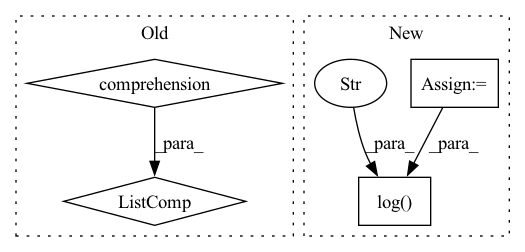

Pattern ID :30751
Before Change
predicts = self.forward(inputs, input_lengths)
predicts = [self.text_process.int2text(sent) for sent in predicts]
targets = [self.text_process.int2text(sent) for sent in targets]
list_wer = torch.tensor(
[self.cal_wer(i, j).item() for i, j in zip(predicts, targets)]
)After Change
def validation_step(self, batch: Tensor, batch_idx: int):
inputs, input_lengths, targets, target_lengths = batch
targets_ctc = targets[:, 1:-1]
outputs, output_lengths = self(inputs, input_lengths)
loss = self.criterion(
outputs.permute(1, 0, 2), targets_ctc, output_lengths, target_lengths
)
self.log("test loss" , loss)
if batch_idx % self.log_idx == 0:
label_sequences, predict_sequences, wer = self.get_wer(
targets_ctc, inputs, input_lengthsIn pattern: SUPERPATTERN
Frequency: 3
Non-data size: 4
Instances Fragment ID: 90682103
Project Name: manhph2211/vistt
Commit Name: 742be9424d91058a3c3e25adc4db742534fffab3
Time: 2022-08-30
Author: manhph5@vingroup.net
File Name: VASR/local/src/engine/trainer.py
M Class Name: ConformerModule
N Class Name: ConformerModule
M Method Name: validation_step(3)
N Method Name: validation_step(3)
M Parent Class: BaseModel
N Parent Class: pl.LightningModule
M File Name: VASR/local/src/engine/trainer.py
N File Name: VASR/local/src/engine/trainer.py
M Start Line: 72
M End Line: 103
N Start Line: 106
N End Line: 126
Before Change
loss = self.cal_loss(outputs, targets, output_lengths, target_lengths)
predicts = self.forward(inputs, input_lengths)
predicts = [self.text_process.int2text(sent) for sent in predicts]
targets = [self.text_process.int2text(sent) for sent in targets]
list_wer = torch.tensor(
[self.cal_wer(i, j).item() for i, j in zip(predicts, targets)]After Change
def test_step(self, batch: Tensor, batch_idx: int):
inputs, input_lengths, targets, target_lengths = batch
targets_ctc = targets[:, 1:-1]
outputs, output_lengths = self(inputs, input_lengths)
loss = self.criterion(
outputs.permute(1, 0, 2), targets_ctc, output_lengths, target_lengths
)
self.log("test loss" , loss)
if batch_idx % self.log_idx == 0:
label_sequences, predict_sequences, wer = self.get_wer(
targets_ctc, inputs, input_lengths Fragment ID: 90682119
Project Name: manhph2211/vistt
Commit Name: 742be9424d91058a3c3e25adc4db742534fffab3
Time: 2022-08-30
Author: manhph5@vingroup.net
File Name: VASR/local/src/engine/trainer.py
M Class Name: ConformerModule
N Class Name: ConformerModule
M Method Name: test_step(3)
N Method Name: test_step(3)
M Parent Class: BaseModel
N Parent Class: pl.LightningModule
M File Name: VASR/local/src/engine/trainer.py
N File Name: VASR/local/src/engine/trainer.py
M Start Line: 105
M End Line: 136
N Start Line: 128
N End Line: 148
Before Change
self.log("epoch/val_loss", total_loss)
def test_epoch_end(self, test_step_outputs):
total_acc = sum([x for x in test_step_outputs] )
total_acc = total_acc / len(test_step_outputs)
self.log("epoch/test_performance", total_acc)
After Change
def test_epoch_end(self, test_step_outputs):
total_loss, total_performance = map(sum, zip(*test_step_outputs))
total_performance = total_performance / len(test_step_outputs)
total_loss = total_loss / len(test_step_outputs)
self.log("epoch/test_performance", total_performance)
self.log("epoch/test_loss" , total_loss)
def training_step(self, batch, batch_idx):
raise NotImplementedError()
Fragment ID: 90682099
Project Name: krenerd/awesome-modular-pytorch-lightning
Commit Name: 1e654fc932cfd16b3e307d652fa9c3f3cec57af9
Time: 2022-05-12
Author: 48239275+krenerd@users.noreply.github.com
File Name: lightning/common.py
M Class Name: _BaseLightningTrainer
N Class Name: _BaseLightningTrainer
M Method Name: test_epoch_end(2)
N Method Name: test_epoch_end(2)
M Parent Class: pl.LightningModule
N Parent Class: pl.LightningModule
M File Name: lightning/common.py
N File Name: lightning/common.py
M Start Line: 26
M End Line: 26
N Start Line: 26
N End Line: 30